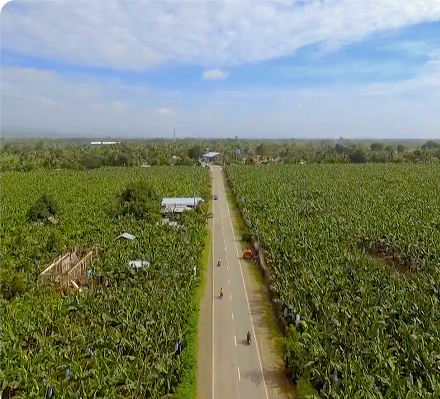
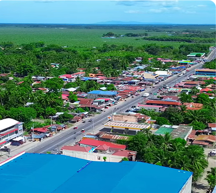
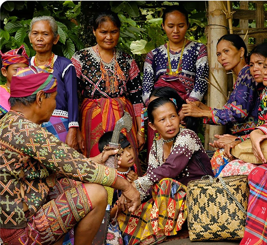
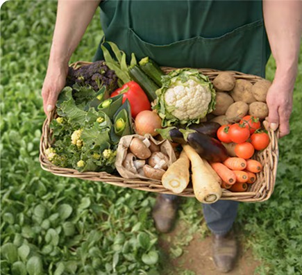

MUNICIPALITY OF STO. TOMAS
The Agricultural and Industrial Powerhouse of Davao del Norte
A Thriving Center for Farming, Trade, and Manufacturing Santo Tomas, one of the most progressive municipalities in Davao del Norte, is a key player in agriculture, agribusiness, and industrial development. Known for its vast banana and coconut plantations, the town is also home to processing plants, commercial hubs, and a strong entrepreneurial spirit. With its expanding economy and modern infrastructure, Santo Tomas continues to attract investors, businesses, and tourists looking for a balance between rural charm and urban growth.

Geography & Area
A Land of Fertile Fields and Expanding Industries
Spanning Over 396 Square Kilometers of Economic Potential Covering 396 square kilometers, Santo Tomas features fertile agricultural plains, small mountain ranges, and industrial zones. Its proximity to Tagum City and Davao City makes it a prime location for trade, business expansion, and commercial development.

Brief History
From Farmlands to an Economic Hub
Santo Tomas was originally a rural farming community, with indigenous Manobo tribes and Visayan settlers shaping its early history. Over the years, banana plantations, coconut farms, and agri-industrial enterprises transformed the municipality into a progressive economic center, now known for its booming agribusiness sector and modern infrastructure.

Demographics & Language
A Diverse and Business-Oriented Community
The majority of Santo Tomas’ population speaks Cebuano (Bisaya), with a mix of Tagalog and English, particularly in business, education, and government sectors. The town’s multicultural makeup and business-friendly environment make it an attractive destination for entrepreneurs, workers, and investors.

Climate & Environment
Sustaining Growth While Protecting Natural Resources
Santo Tomas enjoys a tropical monsoon climate, with consistent rainfall that supports its agricultural productivity. The local government promotes sustainable farming, industrial zoning, and green initiatives, ensuring responsible environmental management as the town continues to grow.
Reference: davaodelnorte-sto-tomas